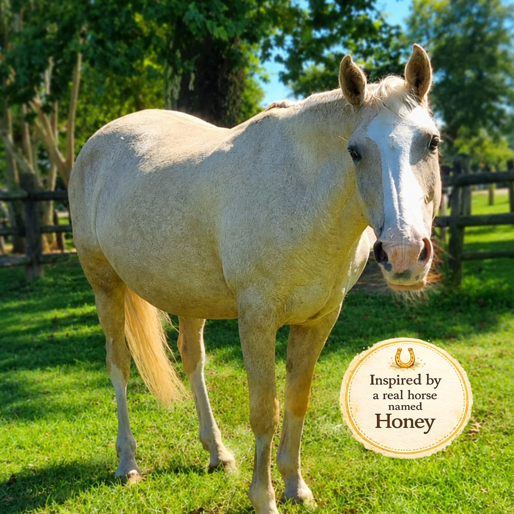

About the Author
Cheryl Dunlop is the creator of the Honey the Horse series. She holds a Bachelor of Science in Animal Science, a National Diploma in Animal Health, and a Postgraduate Certificate in Education.
Drawing on a lifelong love of horses, Cheryl writes gentle stories that help children explore big emotions through kindness, connection, and the quiet comfort of Honey. She has a special interest in the unique bond between horses and people, and hopes each story brings comfort, courage, and calm to children and families around the world.
Cheryl lives in South Africa with her husband, two daughters, and Honey — the gentle horse who inspired the series.

Honey is a gentle, patient horse known for her calm presence and the quiet way she puts children at ease. Her nature is the foundation of every story in this series — not a character invented for the page, but a real horse whose steadiness inspired the whole idea.